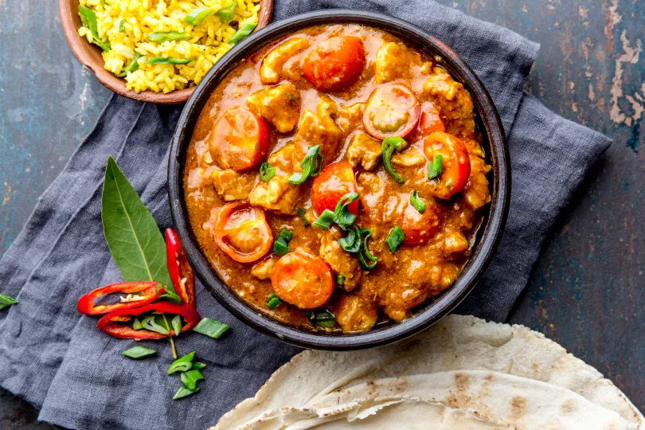

Home
Document
Chciken vindaloo

Vindaloo je jedním z nejoblíbenějších jídel v indické kuchyni a má kořeněnou, pikantní chuť. V tomto receptu používáme kuřecí maso, ale můžete také použít hovězí.Celkově si recept můžete upravit podle svých chutí. Obvykle je velmi pálivý, ale můžete snížit množství pálivosti přidáním menšího množství mleté papriky nebo dalšími ingrediencemi, jako jsou třeba jogurt nebo kokosové mléko. Toto jídlo můžete také připravit den dopředu a nechat ho v lednici, aby se koření mohlo dobře promíchat. Takže ideální mealprep recept. Pojďme na to!
Suroviny
- 500 g R2E kuřecího masa
- 1 cibule
- 4 stroužky česneku
- 10 g zázvoru
- 2 lžíce rajčatového protlaku
- 1 čajová lžička mletého kmínu
- 1 čajová lžička kurkumy
- 1 čajová lžička mleté papriky
- 1 čajová lžička garam masaly
- mletý pepř
- sůl
- 1/2 hrnku octa
- 2 lžíce olivového oleje
- voda
- V hrnci rozehřejte olej a osmahněte na něm cibuli dozlatova.
- Přidejte nakrájený zázvor a nasekaný česnek a smažte je spolu s cibulí asi 1 minutu.
- Přisypte všechna koření - mletý kmín, mletý koriandr, kurkumu, mletou papriku, garam masalu a sůl. Smíchejte koření s cibulí, česnekem a zázvorem a vařte směs asi 2 minuty.
- Přilijte rajčatový protlak a smažte směs asi 2 minuty, než se rajčatový protlak dobře spojí s kořením.
- Vložte nakrájené kuřecí maso a restujte ho asi 5 minut. Přidejte ocet a smíchejte směs. Podlijte dostatkem vody na to, aby kuřecí maso bylo ponořené v tekutině. Vařte směs asi 30 minut, dokud maso není měkké a šťavnaté.
- Podávejte s rýží nebo indickým chlebem naan.